Chapter 7 Diagnostics
library(ggfortify) # for autoplot for lm objects
library(emmeans) # emmeans for pairwise constrasts.
library(tidyverse) # for dplyr, tidyr, ggplot2We will be interested in analyzing whether or not our linear model is a good model and whether or not the data violate any of the assumptions that are required. In general we will be interested in three classes of assumption violations and our diagnostic measures might be able detect one or more of the following issues:
Unusual observations that contribute too much influence to the analysis. These few observations might drastically change the outcome of the model.
Model misspecification. Our assumption that \(E\left[\boldsymbol{y}\right]=\boldsymbol{X}\boldsymbol{\beta}\) might be wrong and we might need to include different covariates in the model to get a satisfactory result.
Error distribution. We have assumed that \(\epsilon_i \stackrel{iid}{\sim} N\left(0,\sigma^{2}\right)\) but autocorrelation, heteroscedasticity, and non-normality might be present.
Often problems with one of these can be corrected by transforming either the explanatory or response variables.
7.1 Detecting Assumption Violations
Throughout this chapter I will use data created by Francis Anscombe that show how simple linear regression can be misused. In particular, these data sets will show how our diagnostic measures will detect various departures from the model assumptions.
The data are available in R as a data frame anscombe and is loaded by default. The data consists of four datasets, each having the same linear regression \(\hat{y}=3+0.5\,x\) but the data are drastically different.
# The anscombe dataset has 8 columns - x1,x2,x3,x4,y1,y2,y3,y4
# and I want it to have 3 columns - Set, X, Y
Anscombe <- rbind(
data.frame(x=anscombe$x1, y=anscombe$y1, set='Set 1'),
data.frame(x=anscombe$x2, y=anscombe$y2, set='Set 2'),
data.frame(x=anscombe$x3, y=anscombe$y3, set='Set 3'),
data.frame(x=anscombe$x4, y=anscombe$y4, set='Set 4'))
# order them by their x values, and add an index column
Anscombe <- Anscombe %>%
group_by(set) %>% # Every subsequent action happens by dataset
arrange(x,y) %>% # sort them on the x-values and if tied, by y-value
mutate( index = 1:n() ) # give each observation within a set, an ID number
# Make a nice graph
ggplot(Anscombe, aes(x=x, y=y)) +
geom_point() +
facet_wrap(~set, scales='free') +
stat_smooth(method="lm", formula=y~x, se=FALSE)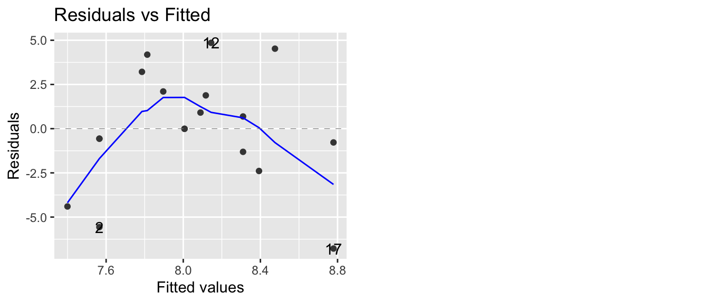
7.1.1 Measures of Influence
7.1.1.1 Standardized Residuals (aka Studentized )
Recall that we have
\[\begin{aligned}\hat{\boldsymbol{y}} &= \boldsymbol{X}\hat{\boldsymbol{\beta}}\\ &= \boldsymbol{X}\left(\boldsymbol{X}^{T}\boldsymbol{X}\right)^{-1}\boldsymbol{X}^{T}\boldsymbol{y}\\ &= \boldsymbol{H}\boldsymbol{y}\\ \end{aligned}\]
where the “Hat Matrix” is \(\boldsymbol{H}=\boldsymbol{X}\left(\boldsymbol{X}^{T}\boldsymbol{X}\right)^{-1}\boldsymbol{X}^{T}\) because we have \(\hat{\boldsymbol{y}}=\boldsymbol{H}\boldsymbol{y}\). The elements of \(\boldsymbol{H}\) can be quite useful in diagnostics. It can be shown that the variance of the \(i\)the residual is \[Var\left(\hat{\epsilon}_{i}\right)=\sigma^{2}\left(1-\boldsymbol{H}_{ii}\right)\] where \(\boldsymbol{H}_{ii}\) is the \(i\)th element of the main diagonal of \(\boldsymbol{H}\). This suggests that I could rescale my residuals to \[\hat{\epsilon}_{i}^{*}=\frac{\hat{\epsilon}_{i}}{\hat{\sigma}\sqrt{1-\boldsymbol{H}_{ii}}}\] which, if the normality and homoscedasticity assumptions hold, should behave as a \(N\left(0,1\right)\) sample.
These rescaled residuals are called “studentized residuals”, though R typically refers to them as “standardized”. Since we have a good intuition about the scale of a standard normal distribution, the scale of standardized residuals will give a good indicator if normality is violated.
There are actually two types of studentized residuals, typically called internal and external among statisticians. The version presented above is the internal version which can be obtained using the R function rstandard() while the external version is available using rstudent(). Whenever you see R present standardized residuals, they are talking about internally studentized residuals. For sake of clarity, I will use the term standardized as well.
7.1.1.1.1 Example - Anscombe’s set 3
For the third dataset, the outlier is the ninth observation with \(x_{9}=13\) and \(y_{9}=12.74\). We calculate the standardized residuals using the function rstandard() and plot them
Set3 <- Anscombe %>% filter(set == 'Set 3') # Just set 3
model <- lm(y ~ x, data=Set3) # Fit the regression line
Set3$stdresid <- rstandard(model) # rstandard() returns the standardized residuals
ggplot(Set3, aes(x=index, y=stdresid)) + # make a plot
geom_point() +
labs(x='Observation Index',
y='Standardized Residuals',
title='Standardized Residuals vs Observation Index')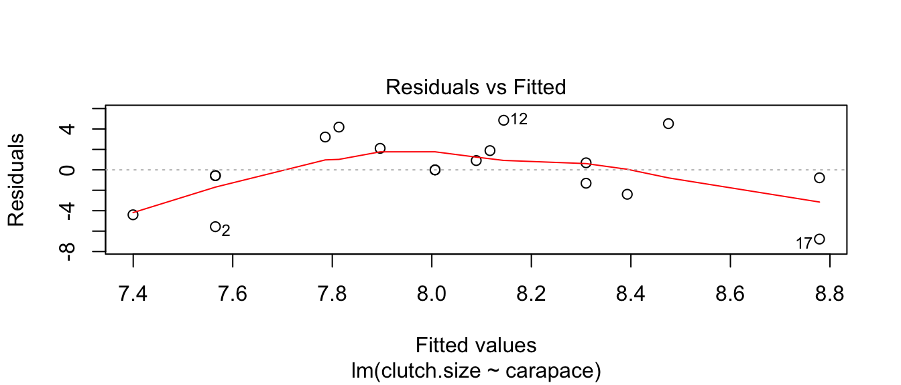
and we notice that the outlier residual is really big. If the model assumptions were true, then the standardized residuals should follow a standard normal distribution, and I would need to have hundreds of observations before I wouldn’t be surprised to see a residual more than 3 standard deviations from 0.
7.1.1.2 Leverage
The extremely large standardized residual suggests that this data point is important, but we would like to quantify how important this observation actually is.
One way to quantify this is to look at the elements of \(\boldsymbol{H}\). Because \[\hat{y}_{i}=\sum_{j=1}^{n}\boldsymbol{H}_{ij}y_{j}\] then the \(i\)th row of \(\boldsymbol{H}\) is a vector of weights that tell us how influential a point \(y_{j}\) is for calculating the predicted value \(\hat{y}_{i}\). If I look at just the main diagonal of \(\boldsymbol{H}\), these are how much weight a point has on its predicted value. As such, I can think of the \(\boldsymbol{H}_{ii}\) as the amount of leverage a particular data point has on the regression line. It can be shown that the leverages must be \(0 \le \boldsymbol{H}_{ii} \le 1\) and that \(\sum \boldsymbol{H}_{ii} = p\).
Set3 <- Anscombe %>% filter( set == 'Set 3')
Set4 <- Anscombe %>% filter( set == 'Set 4')
model3 <- lm(y ~ x, data = Set3 )
model4 <- lm(y ~ x, data = Set4 )
X <- model.matrix(model3)
H <- X %*% solve( t(X) %*% X) %*% t(X)
round(H, digits=2) ## 1 2 3 4 5 6 7 8 9 10 11
## 1 0.32 0.27 0.23 0.18 0.14 0.09 0.05 0.00 -0.05 -0.09 -0.14
## 2 0.27 0.24 0.20 0.16 0.13 0.09 0.05 0.02 -0.02 -0.05 -0.09
## 3 0.23 0.20 0.17 0.15 0.12 0.09 0.06 0.04 0.01 -0.02 -0.05
## 4 0.18 0.16 0.15 0.13 0.11 0.09 0.07 0.05 0.04 0.02 0.00
## 5 0.14 0.13 0.12 0.11 0.10 0.09 0.08 0.07 0.06 0.05 0.05
## 6 0.09 0.09 0.09 0.09 0.09 0.09 0.09 0.09 0.09 0.09 0.09
## 7 0.05 0.05 0.06 0.07 0.08 0.09 0.10 0.11 0.12 0.13 0.14
## 8 0.00 0.02 0.04 0.05 0.07 0.09 0.11 0.13 0.15 0.16 0.18
## 9 -0.05 -0.02 0.01 0.04 0.06 0.09 0.12 0.15 0.17 0.20 0.23
## 10 -0.09 -0.05 -0.02 0.02 0.05 0.09 0.13 0.16 0.20 0.24 0.27
## 11 -0.14 -0.09 -0.05 0.00 0.05 0.09 0.14 0.18 0.23 0.27 0.32Fortunately there is already a function hatvalues() to compute these \(\boldsymbol{H}_{ii}\) values for me. We will compare the leverages from Anscombe’s set 3 versus set 4.
Set3 <- Set3 %>% mutate(leverage = hatvalues(model3)) # add leverage columns
Set4 <- Set4 %>% mutate(leverage = hatvalues(model4))
ggplot( rbind(Set3,Set4), aes(x=index, y=leverage) ) +
geom_point() +
facet_grid( . ~ set )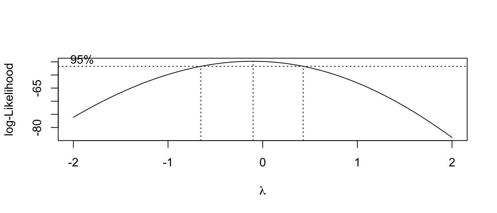
This leverage idea only picks out the potential for a specific value of \(x\) to be influential, but does not actually measure influence. It has picked out the issue with the fourth data set, but does not adequately address the outlier in set 3.
7.1.1.3 Cook’s Distance
To attempt to measure the actual influence of an observation \(\left\{ y_{i},\boldsymbol{x}_{i}^{T}\right\}\) on the linear model, we consider the effect on the regression if we removed the observation and fit the same model. Let \[\hat{\boldsymbol{y}}=\boldsymbol{X}\hat{\boldsymbol{\beta}}\] be the vector of predicted values, where \(\hat{\boldsymbol{\beta}}\) is created using all of the data, and \(\hat{\boldsymbol{y}}_{(i)}=\boldsymbol{X}\hat{\boldsymbol{\beta}}_{(i)}\) be the vector of predicted values where \(\hat{\boldsymbol{\beta}}_{(i)}\) was estimated using all of the data except the \(i\)th observation. Letting \(p\) be the number of \(\beta_{j}\) parameters as usual we define Cook’s distance of the \(i\)th observation as \[ D_{i} = \frac{\left(\hat{\boldsymbol{y}}-\hat{\boldsymbol{y}}_{(i)}\right)^{T}\left(\hat{\boldsymbol{y}}-\hat{\boldsymbol{y}}_{(i)}\right)}{p\hat{\sigma}^{2}} = \frac{\sum_{j=1}^n(\hat{y}_{j}-(\hat{y}_{(i)})_j)^2}{p\hat{\sigma}^2}\] which boils down to saying if the predicted values have large changes when the \(i\)th element is removed, then the distance is big. It can be shown that this formula can be simplified to \[D_{i}=\frac{\hat{\epsilon}_{i}^{*}\boldsymbol{H}_{ii}}{p\left(1-H_{ii}\right)}\] which expresses Cook’s distance in terms of the \(i\)th studentized residual and the \(i\)th leverage.
Nicely, the R function cooks.distance() will calculate Cook’s distance.
Set3 <- Set3 %>% mutate(cooksd = cooks.distance(model3))
Set4 <- Set4 %>% mutate(cooksd = cooks.distance(model4))
# Note: The high leverage point in set 4 has a Cook's distance of Infinity.
ggplot(rbind(Set3,Set4), aes(x=index, y=cooksd)) +
geom_point() +
facet_grid(. ~ set) +
labs(y="Cook's Distance")## Warning: Removed 1 rows containing missing values (geom_point).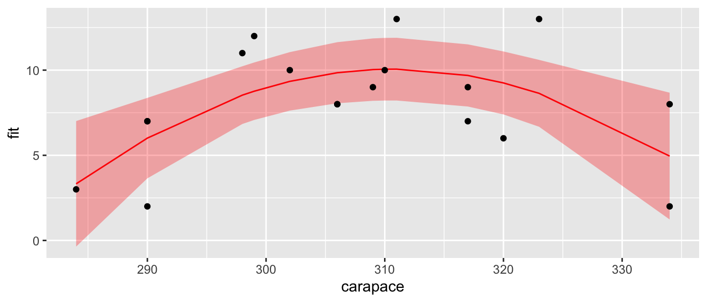
Some texts will give a rule of thumb that points with Cook’s distances greater than 1 should be considered influential, while other books claim a reasonable rule of thumb is \(4/\left(n-p-1\right)\) where \(n\) is the sample size, and \(p\) is the number of parameters in \(\boldsymbol{\beta}\). My take on this, is that you should look for values that are highly different from the rest of your data.
7.1.2 Diagnostic Plots
After fitting a linear model in R, you have the option of looking at diagnostic plots that help to decide if any assumptions are being violated. We will step through each of the plots that are generated by the function plot(model) or using ggplot2 using the package ggfortify.
In the package ggfortify there is a function that will calculate the diagnostics measures and add them to your dataset. This will simplify our graphing process.
Set1 <- Anscombe %>% filter(set == 'Set 1')
model <- lm( y ~ x, data=Set1)
Set1 <- fortify(model) # add diagnostic measures to the dataset
Set1 %>% round(digits=3) # show the dataset nicely## y x .hat .sigma .cooksd .fitted .resid .stdresid
## 1 4.26 4 0.318 1.273 0.123 5.000 -0.740 -0.725
## 2 5.68 5 0.236 1.310 0.004 5.501 0.179 0.166
## 3 7.24 6 0.173 1.220 0.127 6.001 1.239 1.102
## 4 4.82 7 0.127 1.147 0.154 6.501 -1.681 -1.455
## 5 6.95 8 0.100 1.311 0.000 7.001 -0.051 -0.043
## 6 8.81 9 0.091 1.218 0.062 7.501 1.309 1.110
## 7 8.04 10 0.100 1.312 0.000 8.001 0.039 0.033
## 8 8.33 11 0.127 1.310 0.002 8.501 -0.171 -0.148
## 9 10.84 12 0.173 1.100 0.279 9.001 1.839 1.635
## 10 7.58 13 0.236 1.056 0.489 9.501 -1.921 -1.778
## 11 9.96 14 0.318 1.311 0.000 10.001 -0.041 -0.0417.1.2.1 Residuals vs Fitted
In the simple linear regression the most useful plot to look at was the residuals versus the \(x\)-covariate, but we also saw that this was similar to looking at the residuals versus the fitted values. In the general linear model, we will look at the residuals versus the fitted values or possibly the studentized residuals versus the fitted values.
7.1.2.1.1 Polynomial relationships
To explore how this plot can detect non-linear relationships between \(y\) and \(x\), we will examine a data set from Ashton et al. (2007) that relates the length of a tortoise’s carapace to the number of eggs laid in a clutch. The data are
Eggs <- data.frame(
carapace = c(284,290,290,290,298,299,302,306,306,
309,310,311,317,317,320,323,334,334),
clutch.size = c(3,2,7,7,11,12,10,8,8,
9,10,13,7,9,6,13,2,8))
ggplot(Eggs, aes(x=carapace, y=clutch.size)) +
geom_point()
Looking at the data, it seems that we are violating the assumption that a linear model is appropriate, but we will fit the model anyway and look at the residual graph.
model <- lm( clutch.size ~ carapace, data=Eggs )
plot(model, which=1) # Base R Function: which=1 tells R to only make the first plot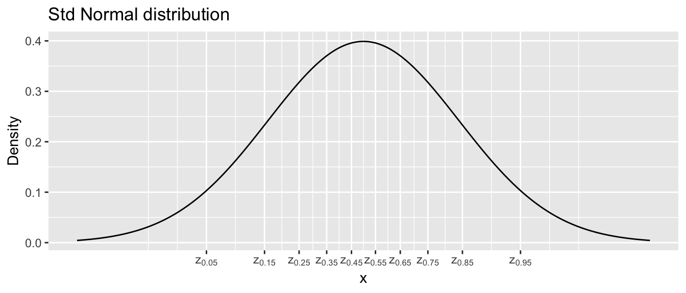
lindia::gg_diagnose(model) # using lindia package
lindia::gg_diagnose(model, plot.all=FALSE)[[3]] # using lindia package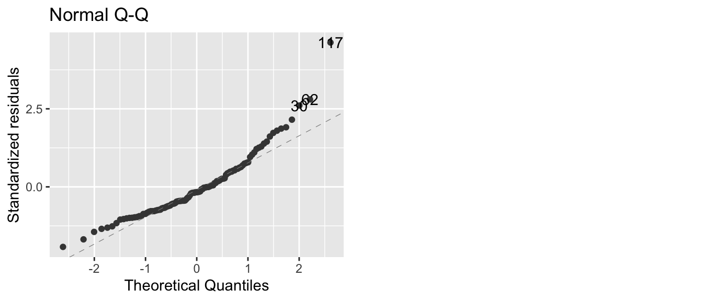
autoplot(model, which=1) # same plot using ggplot2 and ggfortify package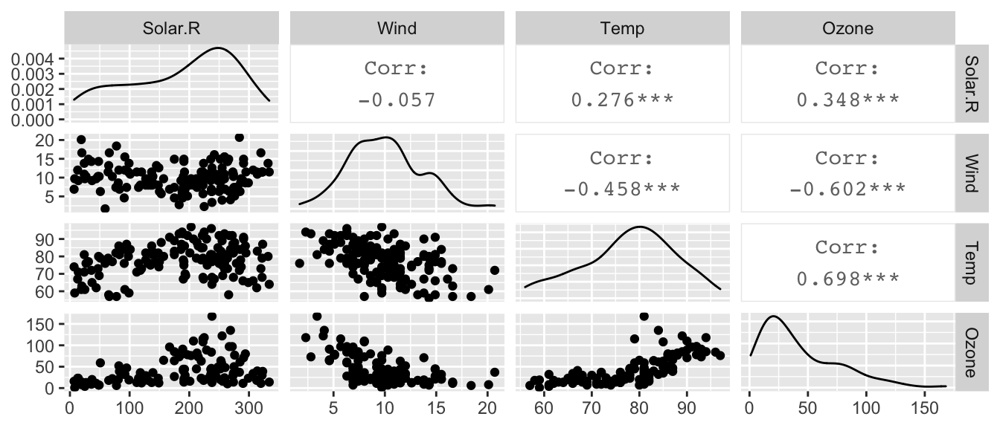
The blue curves going through the plot is a smoother of the residuals. Ideally this should be a flat line and I should see no trend in this plot. Clearly there is a quadratic trend as larger tortoises have larger clutch sizes until some point where the extremely large tortoises start laying fewer (perhaps the extremely large tortoises are extremely old as well). To correct for this, we should fit a model that is quadratic in carapace length. We will create a new covariate, carapace.2, which is the square of the carapace length and add it to the model.
In general I could write the quadratic model as \[y_{i}=\beta_{0}+\beta_{1}x_{i}+\beta_{2}x_{i}^{2}+\epsilon_{i}\] and note that my model is still a linear model with respect to covariates \(\boldsymbol{x}\) and \(\boldsymbol{x}^{2}\) because I can still write the model as \[\begin{aligned} \boldsymbol{y} &= \boldsymbol{X}\boldsymbol{\beta}+\boldsymbol{\epsilon} \\ &= \left[\begin{array}{ccc} 1 & x_{1} & x_{1}^{2}\\ 1 & x_{2} & x_{2}^{2}\\ 1 & x_{3} & x_{3}^{2}\\ \vdots & \vdots & \vdots\\ 1 & x_{n} & x_{n}^{2} \end{array}\right]\left[\begin{array}{c} \beta_{0}\\ \beta_{1}\\ \beta_{2} \end{array}\right] + \left[\begin{array}{c} \epsilon_{1}\\ \epsilon_{2}\\ \epsilon_{3}\\ \vdots\\ \epsilon_{n} \end{array}\right]\end{aligned}\]
# add a new column that is carapace^2
Eggs2 <- Eggs %>% mutate( carapace.2 = carapace^2 )
model <- lm( clutch.size ~ carapace + carapace.2, data=Eggs2 )
# make R do it inside the formula... convenient
model <- lm( clutch.size ~ carapace + I(carapace^2), data=Eggs )
# Fit an arbitrary degree polynomial, I recommend this method for fitting the model!
model <- lm( clutch.size ~ poly(carapace, 2), data=Eggs )
# If you use poly() in the formula, you must use 'data=' here,
# otherwise you can skip it and R will do the right thing.
autoplot(model, which=1, data=Eggs) 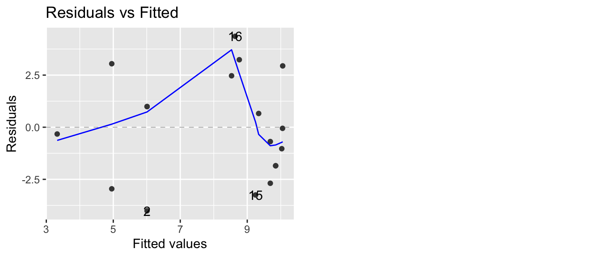
Now our residual plot versus fitted values does not show any trend, suggesting that the quadratic model is fitting the data well. Graphing the original data along with the predicted values confirms this.
# add the fitted and CI lwr/upr columns to my dataset
Eggs <- Eggs %>%
select( -matches('fit'), -matches('lwr'), -matches('upr') ) %>%
cbind( predict(model, interval='confidence') )
ggplot(Eggs, aes(x=carapace)) +
geom_ribbon( aes(ymin=lwr, ymax=upr), fill='red', alpha=.3) +
geom_line(aes(y=fit), color='red') +
geom_point(aes(y=clutch.size)) 
7.1.2.1.2 Heteroskedasticity
The plot of residuals versus fitted values can detect heteroskedasticity (non-constant variance) in the error terms.
To illustrate this, we turn to another dataset in the Faraway book. The dataset airquality uses data taken from an environmental study that measured four variables, ozone, solar radiation, temperature and wind speed for 153 consecutive days in New York. The goal is to predict the level of ozone using the weather variables.
We first graph all pairs of variables in the dataset.
data(airquality)
# pairs(~ Ozone + Solar.R + Wind + Temp, data=airquality)
airquality %>% select( Solar.R, Wind, Temp, Ozone) %>%
GGally::ggpairs()
and notice that ozone levels are positively correlated with solar radiation and temperature, and negatively correlated with wind speed. A linear relationship with wind might be suspect as is the increasing variability in the response to high temperature. However, we don’t know if those trends will remain after fitting the model, because there is some covariance among the predictors.
model <- lm(Ozone ~ Solar.R + Wind + Temp, data=airquality)
autoplot(model, which=1) 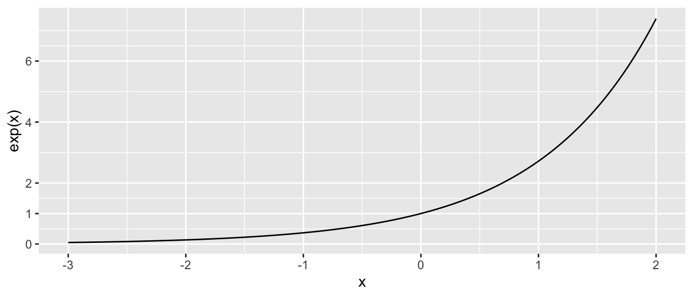
As we feared, we have both a non-constant variance and a non-linear relationship. A transformation of the \(y\) variable might be able to fix our problem.
7.1.2.2 QQplots
If we are taking a sample of size \(n=10\) from a standard normal distribution, then I should expect that the smallest observation will be negative. Intuitively, you would expect the smallest observation to be near the \(10\)th percentile of the standard normal, and likewise the second smallest should be near the \(20\)th percentile.
This idea needs a little modification because the largest observation cannot be near the \(100\)th percentile (because that is \(\infty\)). So we’ll adjust the estimates to still be spaced at \((1/n)\) quantile increments, but starting at the \(0.5/n\) quantile instead of the \(1/n\) quantile. So the smallest observation should be near the \(0.05\) quantile, the second smallest should be near the \(0.15\) quantile, and the largest observation should be near the \(0.95\) quantile. I will refer to these as the theoretical quantiles.
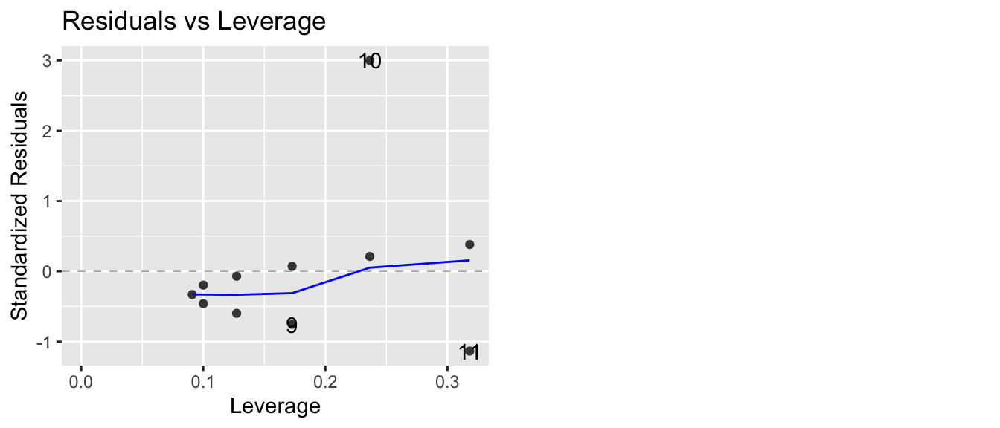
I can then graph the theoretical quantiles vs my observed values and if they lie on the 1-to-1 line, then my data comes from a standard normal distribution.
set.seed(93516) # make random sample in the next code chunk consistant run-to-run
n <- 10
data <- data.frame( observed = rnorm(n, mean=0, sd=1) ) %>%
arrange(observed) %>%
mutate( theoretical = qnorm( (1:n -.5)/n ) )
ggplot(data, aes(x=theoretical, y=observed) ) +
geom_point() +
geom_abline( intercept=0, slope=1, linetype=2, alpha=.7) +
labs(main='Q-Q Plot: Observed vs Normal Distribution')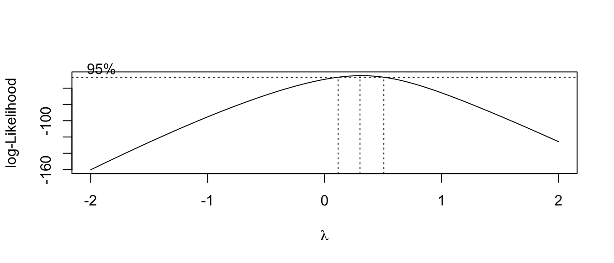
In the context of a regression model, we wish to look at the residuals and see if there are obvious departures from normality. Returning to the air quality example, R will calculate the qqplot for us.
model <- lm(Ozone ~ Solar.R + Wind + Temp, data=airquality)
autoplot(model, which=2) 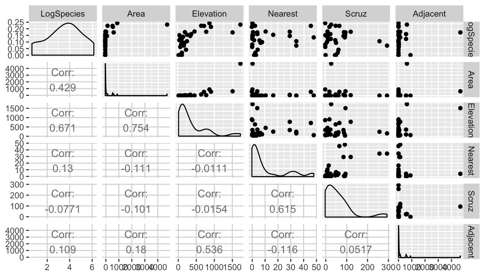
In this case, we have a large number of residuals that are bigger than I would expect them to be based on them being from a normal distribution. We could further test this using the Shapiro-Wilks test and compare the standardized residuals against a \(N\left(0,1\right)\) distribution.
shapiro.test( rstandard(model) )##
## Shapiro-Wilk normality test
##
## data: rstandard(model)
## W = 0.9151, p-value = 2.819e-06The tail of the distribution of observed residuals is far from what we expect to see.
7.1.2.3 Scale-Location Plot
This plot is a variation on the fitted vs residuals plot, but the y-axis uses the square root of the absolute value of the standardized residuals. Supposedly this makes detecting increasing variance easier to detect, but I’m not convinced.
7.1.2.4 Residuals vs Leverage (plus Cook’s Distance)
This plot lets the user examine the which observations have a high potential for being influential (i.e. high leverage) versus how large the residual is. Because Cook’s distance is a function of those two traits, we can also divide the graph up into regions by the value of Cook’s Distance.
Returning to Anscombe’s third set of data, we see
model3 <- lm(y ~ x, data=Set3)
autoplot(model3, which=5)
that one data point (observation 10) has an extremely large standardized residual. This is one plot where I prefer what the base graphics in R does compared to the ggfortify version. The base version of R adds some contour lines that mark where the contours of where Cook’s distance is 1/2 and 1.
plot(model3, which=5)
7.2 Exercises
- In the ANCOVA chapter, we examined the relationship on dose of vitamin C on guinea pig tooth growth based on how the vitamin was delivered (orange juice vs a pill supplement).
- Load the
ToothGrowthdata which is pre-loaded in base R. - Plot the data with
doselevel on the x-axis and tooth length growth (len) on the y-axis. Color the points by supplement type (supp). - Is the data evenly distributed along the x-axis? Comment on the wisdom of using this design.
- Fit a linear model to these data and examine the diagnostic plots. What stands out to you?
- Log-transform the dose variable and repeat parts (c) and (d). Comment on the effect of the log transformation.
- Load the
- The dataset
infmortin thefarawaypackage has information about infant mortality from countries around the world. Be aware that this is a old data set and does not necessarily reflect current conditions. More information about the dataset can be found using?faraway::infmort. We will be interested in understanding how infant mortality is predicted by per capita income, world region, and oil export status.Plot the relationship between income and mortality. This can be done using the command
data('infmort', package='faraway') pairs(mortality ~., data=infmort)What do you notice about the relationship between mortality and income?
Fit a linear model without any interaction terms with all three covariates as predictors of infant mortality. Examine the diagnostic plots. What stands out?
Examine the pairs plot with log(mortality), income, and log(income). Which should be used in our model,
incomeorlog(income)?
- Using the
pressuredata in thedatasetspackage, fit a model with pressure as the response and temperature as the predictor using transformations to obtain a good fit. Feel free to experiment with what might be considered a ridiculously complicated model with a high degree polynomial. These models can most easily be fit using thepoly(x, degree=p)function in the formula specification where you swap out the covariatexand polynomial degreep.- Document your process of building your final model. Do not show graphs or computer output that is not relevant to your decision or that you do not wish to comment on.
- Comment on the interpretability of your (possibly ridiculously complicated) model. Consider a situation where I’m designing a system where it is easy to measure temperature, but I am unable to measure pressure. Could we get by with just measuring temperature? What if I didn’t know the ideal gas law and I’m trying to better understand how temperature and pressure are related?
- We will consider the relationship between income and race using a subset of employed individuals from the American Community Survey.
- Load the
EmployedACSdataset from theLock5Datapackage. - Create a box plot showing the relationship between
RaceandIncome. - Fit an ANOVA model to this data and consider the diagnostic plots for the residuals. What do you notice?
- Load the